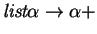

This file contains partial list functions whose type is lifted using the sum and empty datatype, e.g. head has type . Other functions defined here include ``last'', which gives the last element of a list and ``prune'' which deletes the last element of a list. Various theorems about these functions are proved.
** Module lib_list_partial Imports lib_list_bool lib_unit lib_sum
head = ... : {t|Type}(list t)->sum unit t
last = ... : {s|Type}(list s)->sum unit s
prune = ... : {s|Type}(list s)->sum unit (list s)
last_resp_cons = ... :
{t|Type}{l:list t}{a,b:t}
Eq (last (cons a l)) (last (cons b (cons a l)))
last_resp_append = ... :
{t|Type}{l,m:list t}{a:t}
Eq (last (append l (cons a m))) (last (cons a m))
last_gives_last = ... :
{t|Type}{l:list t}{a:t}Eq (last (append l (cons a (nil t)))) (in2 a)
prune_resp_cons = ... :
{t|Type}{l:list t}{a,b:t}
Eq (prune (cons b (cons a l)))
(case ([_:unit]in1 void) ([l'5:list t]in2 (cons b l'5))
(prune (cons a l)))
prune_non_empty_is_list = ... :
{t|Type}{l:list t}{a:t}Ex ([m:list t]Eq (prune (cons a l)) (in2 m))
prune_resp_append = ... :
{t|Type}{l,m:list t}{a:t}
Eq (prune (append l (cons a m)))
(case ([_:unit]in1 void) ([x:list t]in2 (append l x))
(prune (cons a m)))
prune_deletes_tip = ... :
{t|Type}{x:t}{l:list t}
Eq (prune (append l (cons x (nil t)))) (in2 l)